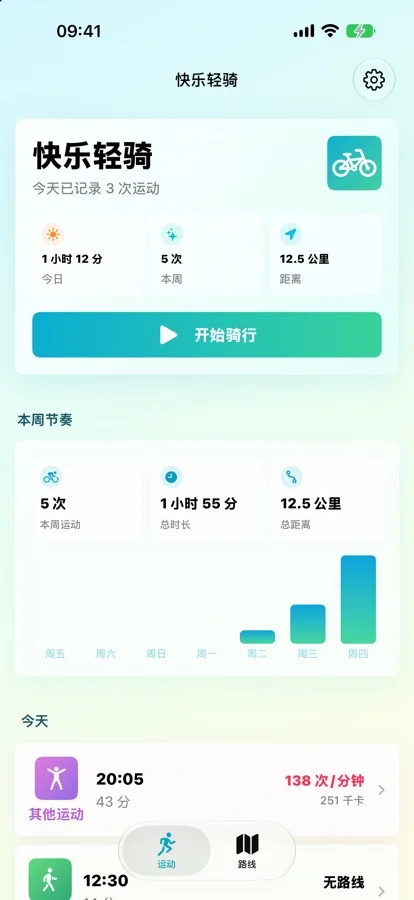
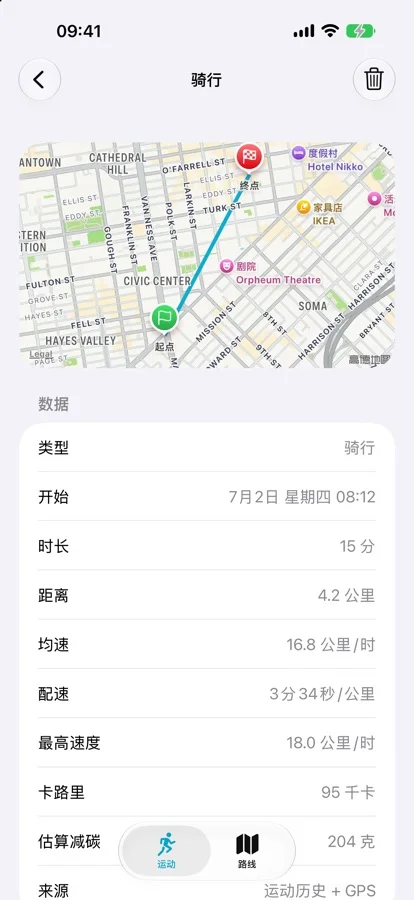

Free iPhone bike tracker
Free bike ride tracker app for iPhone. No Start button.
HappyRide records qualifying bike rides automatically without tapping Start. Save GPS routes and Apple Health workouts; core tracking is free.


Bike ride tracker app
Track the ride first. Review the activity later.
HappyRide uses motion signals and background location to recognize qualifying outdoor activity and create a workout record, reducing the chance that a ride disappears because you forgot to tap Start.
Recognizes bike rides and records the route and workout details in the background.
The same automatic workflow can identify qualifying walks and runs.
Review activity history and recorded workouts. Advanced statistics are part of optional HappyRide Pro.
Apple ecosystem
Routes, heart rate, calories, and workouts stay connected.
With permission, HappyRide can combine iPhone route tracking with Apple Watch heart-rate data and save the resulting workout to Apple Health.
Use heart-rate readings from Apple Watch during supported activities.
Qualifying activities can include route, heart rate, calories, and workout details in Health.
See ride-related information and access HappyRide from the watch face.
Optional route planning
Choose a route style, distance, or nearby destination.
Automatic activity recording is free and can work offline, depending on permissions and available sensor data. Optional HappyRide Pro adds the live cycling computer after the first free ride, advanced statistics, internet-based route planning, and turn-by-turn voice navigation.
Compare Quiet, Scenic, Balanced, and Shortest routing preferences.
Build loops around 5, 10, or 20 km, or route toward a nearby destination.
Use navigation prompts while following a planned route.
Language and permissions
Know the current boundaries before installing.
HappyRide 1.4.2 supports 12 interface languages and follows your app language preference. Automatic tracking depends on Motion & Fitness and location access; saving workouts to Apple Health requires separate permission.
Apple lists Arabic, English, French, German, Italian, Japanese, Korean, Malay, Polish, Simplified Chinese, Swedish, Traditional Chinese. The existing screenshots show Simplified Chinese; they are not translated previews.
Used to distinguish cycling, walking, and running activity patterns.
Always location access is required to record routes in the background when a qualifying activity is detected.
Used only with permission to read supported signals and write workout information.
Common questions
Free tracking, automatic recording, and compatibility.
Current product facts were checked against the public App Store listing on October 23, 2026.
Is HappyRide a free bike ride tracker app for iPhone?
Automatic activity recording is free. An optional auto-renewing HappyRide Pro subscription unlocks the live cycling computer after the first free ride, advanced statistics, Quiet and Scenic route planning, and turn-by-turn voice navigation. Route planning requires internet access; current subscription prices and terms appear before purchase.
Does HappyRide start recording automatically?
HappyRide uses on-device motion signals and background location to detect cycling, walking, or running and record qualifying activities without requiring a manual start every time.
Does HappyRide work with Apple Watch and Apple Health?
Yes. HappyRide can use Apple Watch heart-rate data, includes a Watch app and complication, and writes qualifying activities to Apple Health with route, heart rate, calories, and workout details.
Does HappyRide work offline?
The core tracking workflow is designed to work offline. The optional route-planning features require a network connection.
Is HappyRide available in English?
Yes. HappyRide 1.4.2 supports English among 12 interface languages: Arabic, English, French, German, Italian, Japanese, Korean, Malay, Polish, Simplified Chinese, Swedish, Traditional Chinese. It follows your app language preference.
Which iOS version does HappyRide require?
HappyRide version 1.4.2 requires iOS 17.0 or later.
Regional App Store listings
Choose your local App Store listing.
Open a regional listing to check local prices, compatibility, supported app languages, and the features included in your store. This product page is in English; the app’s interface languages are listed separately in the App Store.
Plan a ride
Estimate the time, then record the actual ride.
Enter two known values in the cycling speed, time and distance calculator to find the third. Choose kilometers or miles, and keep breaks separate from moving time. A 20 km ride taking 1 hour has a moving average of 20 km/h; adding a 15-minute break makes total time 1 hour 15 minutes and the overall average 16 km/h.
The calculator uses your inputs without GPS or road-condition prediction. Actual distance, moving time and stops can change the result. Check the recorded activity after riding, and read the cycling time and distance guide for examples of combining ride segments.